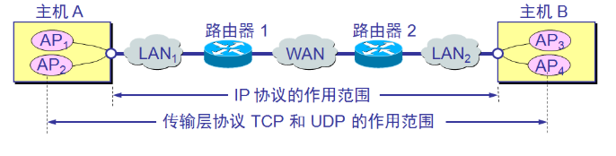
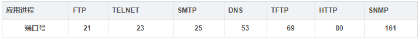
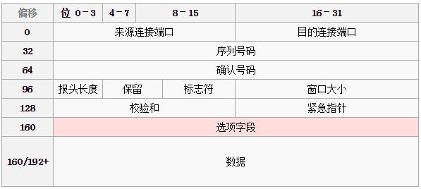
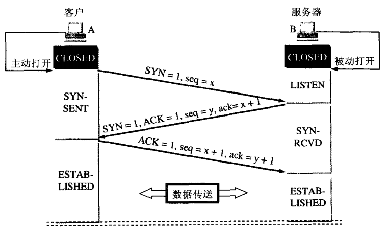
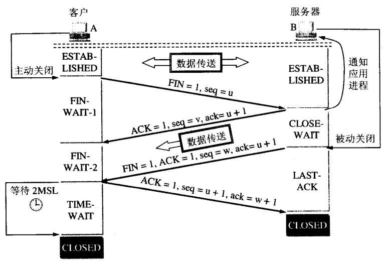

传输层
我们知道传输层位于网络层之上，网络层提供了主机之间的逻辑通道。那既然已经把一个数据包从一个主机发到另一个主机上面了,为什么还需要传输层呢？
位于两台网络主机中真正的数据通信主体并不是这两台主机,而是两台主机中的各种网络应用进程.同一时间一台主机上可能有多个进程同时运行,这时候就需要为应用程序提供一个标识,那就是端口

- 同时从图中也可以看出来,IP协议提供了主机之间的逻辑通信.而传输层协议提供的是进程之间的逻辑通信.
概述
传输层协议能提供应用的多路复用/分用服务、可靠数据传送、带宽保证及延迟保证等。网络层提供的是“best effort”尽力而为的服务，网络层提供的无连接服务不可靠(丢包、重复)，并且路由器可能崩溃，或者传输线路中断，所以传输层必须足够健壮来解决网络层不可靠，不稳定的问题，比如说传输层可检测到包丢失、损坏、乱序等差错情况，采取相应措施；或者当数据传输过程中网络连接中断，传输层可与远程传输实体建立一新的网络连接，在中断处继续数据的传输。
- 作用：传输层为它上面的应用层提供通信服务
- 传输层两大重要的功能：复用 和 分用。
- 复用：在发送端，多个应用进程公用一个传输层；
- 分用：在接收端，传输层会根据端口号将数据分派给不同的应用进程。
- 和网络层的区别：
- 网络层为不同主机提供通信服务，而传输层为不同主机的不同应用提供通信服务。
- 网络层只对报文头部进行差错检测，而传输层对整个报文进行差错检测。
传输层的服务基本原理
1.多路复用和解复用（分路）技术
复用是指：发送方的不同的应用进程都可以使用同一个传输层协议传送数据；
分路技术是指：接收方的传输层剥去报文首部之后能把这些数据正确的传输到正确的应用进程上。
2.可靠数据传输
3.流量控制和拥塞控制
传输层提供的服务
传输层寻址和端口
传输层主要是提供不同主机上的进程之间的逻辑通信（端到端的通信），即使在不可靠的网络层（主机之间的逻辑通信）传输下，传输层也能提供可靠的传输。（所谓的逻辑通信就是指：传输层之间看似是在水平方向传送数据，但是事实上这两个传输层之间并没有水平方向上的物理连接）
传输层的寻址最重要的就是进程的端口号了
端口简言之就是为其临近层的应用层的各个应用进程的数据通过这个“门”向下传递给传输层，反过来呢就是让传输层知道接受到的报文数据如何正确传递交付到对应的应用层上的进程上。
端口号就是用来标识应用进程的数字标识。其端口号的长度为16Bit;也就是能够标识2^16个不同的端口号。另外端口号根据端口范围分为2类。
服务端使用的端口号
- 1.熟知端口号：0-1023范围
- 由IANA（互联网地址指派机构分配给TCP/IP最重要的一些应用进程，为固定格式）
- 2.登记端口号：1024-49151
- 1024-49151为没有熟知端口号的应用程序使用的，需要给IANA注册登记，防止重复。
- 常见的熟知端口号
- 
客户端使用的端口号
- 数值范围为49152-65535.也叫作短暂端口号。是在客户端进程运行成功后动态选择的。
- 另外需要注意 是端口号只具有本地意义，即端口号只是标志本地计算机应用层的各进程。在因特网中，**不同的计算机的相同端口号是没有联系的。
补充
- 套接字（socket）。我们知道在网络中通过Ip来唯一标识一个主机。而通过端口号来标识一台主机中的不同应用进程。所以在网络连接中就出现了Socket套接字来标识一个主机上的某进程。其实际是一个通信端点。
- 套接字（Socket） = (Host IP , port)
无连接服务和面向连接服务
面向连接和无连接服务的区别在于在通信双方通信之前，是否需要先建立连接。换句话说就是，通信双方之间的数据传输是否基于双方需要建立连接。那么，面向连接就是在双方通信之前，必须建立连接，在通信过程中，整个连接的过程一直被监控和管理，在通信结束之后，则释放这个连接。相反，无连接服务是。两个实体之间的通信不需要建立好连接，需要通信时，直接将信息发送到“网络”上，让该信息在网上尽力传输到目的方。
在TCP/IP协议簇中，在IP层中使用了这两种协议服务。其中TCP提供面向连接的可靠的传输服务，它不提供广播和组播机制，包括了确认-重传机制、流量控制、计时定时器、连接管理等等。这一方面使得TCP连接适用在可靠性高的传输场合，如HTTP何FTP、TELNET等 。但是，另一方面呢就是也因此增加了开销。例如数据报的报头增大。
UDP协议是非连接的不可靠传输机制。它在Ip之上仅提供了多路复用和数据差错检查服务。由于UDP服务不需要建立连接，执行速度快，实时性好，只要用于小文件的传输协议*（DNS,SNMP,RTP,TFTP）
补充：
1.IP数据报和UDP数据报的区别：IP数据报在网络层要经过路由的存储转发；而UDP数据报是在传输层的端到端的逻辑信道中传输，而封装成IP数据报在网络传输中，UDP数据报对于路由是不可见的。
2.TCP和网络层的虚电路的区别：TCP报文段在传输层抽象的逻辑信道中传输，对路由器不可见；虚电路所经过的交换节点都必须保存虚电路状态信息。在网络层若采用虚电路方式，则无法提供无连接服务；而传输层采用TCP协议不影响网络层提供无连接服务。
UDP（用户数据报协议）协议
UDP的特点
- UDP只在IP数据报服务的基础上增加了少量的功能：复用与分用、对整个报文的差错检测。
- UDP是无连接的 通信前不需要建立连接，通信结束也无需释放连接。
- UDP是不可靠的 它是尽力而为交付，不能确保每一个数据报都送达。
- UDP是面向报文的 所谓『面向报文』就是指：UDP数据传输的单位是报文，且不会对数据作任何 拆分 和 拼接 操作。 在发送端，应用程序给传输层的UDP什么样的数据，UDP不会对数据进行切分，只增加一个UDP头并交给网络层。 在接收端，UDP收到网络层的数据报后，去除IP数据报头部后遍交给应用层，不会作任何拼接操作。
- UDP没有拥塞控制 UDP始终以恒定的速率发送数据，并不会根据网络拥塞情况对发送速率作调整。这种方式有利有弊。 弊端：网络拥塞时有些报文可能会丢失，因此UDP不可靠。 优点：有些使用场景允许报文丢失，如：直播、语音通话，但对实时性要求很高，此时UDP还是很有用武之地的。
- UDP支持一对一、一对多、多对多、多对一通信 而TCP只支持一对一通信。
- UDP首部开销小，只有8字节。 而TCP头部至少由20字节，相比于TCP要高效很多。
UDP报文头
- 源端口
- 目的端口
- 长度：整个数据报的长度
- 检验和：整个数据报的检验和。
UDP协议的特点:
- 无连接性
- 不可靠性
- 以报文为边界
- 无流量控制和拥塞控制方案
- 支持但播,组播,广播等多种通信方式
TCP（传输控制协议）详解
TCP特点
- TCP是面向连接的 通信前需要建立连接，通信结束需要释放连接。
- TCP提供可靠交付服务 所谓『可靠』指的是：TCP发送的数据无重复、无丢失、无错误、与发送端顺序一致。
- TCP是面向字节流的 所谓『面向字节流』指的是：TCP以字节为单位。虽然传输的过程中数据被划分成一个个数据报，但这只是为了方便传输，接收端最终接受到的数据将与发送端的数据一模一样。
- TCP提供全双工通信 所谓『全双工通信』指的是：TCP的两端既可以作为发送端，也可以作为接收端。
- 一条TCP连接的两端只能有两个端点 TCP只能提供点到点的通信，而UDP可以任意方式的通信。
TCP连接 与 套接字
- 什么是『TCP连接』？ TCP连接是一种抽象的概念，表示一条可以通信的链路。 每条TCP连接有且仅有两个端点，表示通信的双方。且双发在任意时刻都可以作为发送者和接收者。
- 什么是『套接字』？ 一条TCP连接的两端就是两个套接字。 套接字=IP地址:端口号。 因此，TCP连接=（套接字1，套接字2）=（IP1:端口号1，IP2:端口号2）
TCP头部

TCP头部长度有20字节的固定部分，选项部分长度不定，但最多40字节，因此TCP头部在20-60字节之间。
- 源端口 和 目的端口 传输层和网络层一大重要区别就是传输层指定了数据报发往的应用进程，因此需要端口号标识。
- 序号 当前TCP数据报数据部分的第一个字节的序号。 我们知道，TCP是面向字节的，它会对发送的每一个字节进行编号，而且不同数据报之间是连续编号的。 由于本字段4字节，可以给[0,2^32-1]个字节进行编号（大约4G），而且序号循环使用，当发送完2^32-1个字节后，序号又从0开始。 一般来说，当2^32-1个字节被发送的时候，前面的字节早就发送成功了，因此序号可以循环使用。
- 确认号 表示当前主机作为接收端时，期望接收的下一个字节的编号是多少。 也表示，当前主机已经正确接收的最后一个字节序号+1。
- 数据偏移（报文长度） 它表明了数据报头部的长度。
- 保留字段
- 标识符 TCP有7种标识符，用于表示TCP报文的性质。它们只能为0或1。
- URG=1 当URG字段被置1，表示本数据报的数据部分包含紧急信息，此时紧急指针有效。 紧急数据一定位于当前数据包数据部分的最前面，紧急指针标明了紧急数据的尾部。 如control+c：这个命令要求操作系统立即停止当前进程。此时，这条命令就会存放在数据包数据部分的开头，并由紧急指针标识命令的位置，并URG字段被置1。
- ACK=1 ACK被置1后确认号字段才有效。 此外，TCP规定，在连接建立后传送的所有报文段都必须把ACK置1。
- PSH=1 当接收方收到PSH=1的报文后，会立即将数据交付给应用程序，而不会等到缓冲区满后再提交。 一些交互式应用需要这样的功能，降低命令的响应时间。
- RST=1 当该值为1时，表示当前TCP连接出现严重问题，必须要释放重连。
- SYN=1 SYN在建立连接时使用。 当SYN=1，ACK=0时，表示当前报文段是一个连接请求报文。 当SYN=1，ACK=1时，表示当前报文段是一个同意建立连接的应答报文。
- FIN=1 FIN=1表示此报文段是一个释放连接的请求报文。
- 接收窗口大小 该字段用于实现TCP的流量控制。 它表示当前接收方的接收窗口的剩余容量，发送方收到该值后会将发送窗口调整成该值的大小。发送窗口的大小又决定了发送速率，所以接收方通过设置该值就可以控制发送放的发送速率。 发送方每收到一个数据报都要调整当前的发送窗口。
- 检验和 用于接收端检验整个数据包在传输过程中是否出错。
- 紧急指针 用于标识紧急数据的尾部。
- 选项字段 上述字段都是每个TCP头部必须要有的，而选项字段是可选的，且长度可变，最长40字节。 最常用的选项字段为MMS：最大报文长度。
TCP三次握手

PS：TCP协议中，主动发起请求的一端称为『客户端』，被动连接的一端称为『服务端』。不管是客户端还是服务端，TCP连接建立完后都能发送和接收数据。
起初，服务器和客户端都为CLOSED状态。在通信开始前，双方都得创建各自的传输控制块（TCB）。 服务器创建完TCB后遍进入LISTEN状态，此时准备接收客户端发来的连接请求。
第一次握手 客户端向服务端发送连接请求报文段。该报文段的头部中SYN=1，ACK=0，seq=x。请求发送后，客户端便进入SYN-SENT状态。
- PS1：SYN=1，ACK=0表示该报文段为连接请求报文。
- PS2：x为本次TCP通信的字节流的初始序号。 TCP规定：SYN=1的报文段不能有数据部分，但要消耗掉一个序号。
第二次握手 服务端收到连接请求报文段后，如果同意连接，则会发送一个应答：SYN=1，ACK=1，seq=y，ack=x+1。 该应答发送完成后便进入SYN-RCVD状态。
- PS1：SYN=1，ACK=1表示该报文段为连接同意的应答报文。
- PS2：seq=y表示服务端作为发送者时，发送字节流的初始序号。
- PS3：ack=x+1表示服务端希望下一个数据报发送序号从x+1开始的字节。
第三次握手 当客户端收到连接同意的应答后，还要向服务端发送一个确认报文段，表示：服务端发来的连接同意应答已经成功收到。 该报文段的头部为：ACK=1，seq=x+1，ack=y+1。 客户端发完这个报文段后便进入ESTABLISHED状态，服务端收到这个应答后也进入ESTABLISHED状态，此时连接的建立完成！
为什么连接建立需要三次握手，而不是两次握手？ 防止失效的连接请求报文段被服务端接收，从而产生错误。
PS：失效的连接请求：若客户端向服务端发送的连接请求丢失，客户端等待应答超时后就会再次发送连接请求，此时，上一个连接请求就是『失效的』。
若建立连接只需两次握手，客户端并没有太大的变化，仍然需要获得服务端的应答后才进入ESTABLISHED状态，而服务端在收到连接请求后就进入ESTABLISHED状态。此时如果网络拥塞，客户端发送的连接请求迟迟到不了服务端，客户端便超时重发请求，如果服务端正确接收并确认应答，双方便开始通信，通信结束后释放连接。此时，如果那个失效的连接请求抵达了服务端，由于只有两次握手，服务端收到请求就会进入ESTABLISHED状态，等待发送数据或主动发送数据。但此时的客户端早已进入CLOSED状态，服务端将会一直等待下去，这样浪费服务端连接资源。
TCP四次挥手

TCP连接的释放一共需要四步，因此称为『四次挥手』。 我们知道，TCP连接是双向的，因此在四次挥手中，前两次挥手用于断开一个方向的连接，后两次挥手用于断开另一方向的连接。
第一次挥手 若A认为数据发送完成，则它需要向B发送连接释放请求。该请求只有报文头，头中携带的主要参数为： FIN=1，seq=u。此时，A将进入FIN-WAIT-1状态。
- PS1：FIN=1表示该报文段是一个连接释放请求。
- PS2：seq=u，u-1是A向B发送的最后一个字节的序号。
第二次挥手 B收到连接释放请求后，会通知相应的应用程序，告诉它A向B这个方向的连接已经释放。此时B进入CLOSE-WAIT状态，并向A发送连接释放的应答，其报文头包含： ACK=1，seq=v，ack=u+1。
- PS1：ACK=1：除TCP连接请求报文段以外，TCP通信过程中所有数据报的ACK都为1，表示应答。
- PS2：seq=v，v-1是B向A发送的最后一个字节的序号。
- PS3：ack=u+1表示希望收到从第u+1个字节开始的报文段，并且已经成功接收了前u个字节。
A收到该应答，进入FIN-WAIT-2状态，等待B发送连接释放请求。
第二次挥手完成后，A到B方向的连接已经释放，B不会再接收数据，A也不会再发送数据。但B到A方向的连接仍然存在，B可以继续向A发送数据。
第三次挥手 当B向A发完所有数据后，向A发送连接释放请求，请求头：FIN=1，ACK=1，seq=w，ack=u+1。B便进入LAST-ACK状态。
第四次挥手 A收到释放请求后，向B发送确认应答，此时A进入TIME-WAIT状态。该状态会持续2MSL时间，若该时间段内没有B的重发请求的话，就进入CLOSED状态，撤销TCB。当B收到确认应答后，也便进入CLOSED状态，撤销TCB。
为什么A要先进入TIME-WAIT状态，等待2MSL时间后才进入CLOSED状态？ 为了保证B能收到A的确认应答。 若A发完确认应答后直接进入CLOSED状态，那么如果该应答丢失，B等待超时后就会重新发送连接释放请求，但此时A已经关闭了，不会作出任何响应，因此B永远无法正常关闭。
TCP可靠传输的实现
TCP的可靠性表现在：它向应用层提供的数据是 无差错的、有序的、无丢失的，简单的说就是：TCP最终递交给应用层的数据和发送者发送的数据是一模一样的。 TCP采用了流量控制、拥塞控制、连续ARQ等技术来保证它的可靠性。
PS：网络层传输的数据单元为『数据报』，传输层的数据单元为『报文段』，但为了方便起见，可以统称为『分组』。
停止等待协议（ARQ协议）
TCP保证其可靠性采用的是更为复杂的滑动窗口协议，但停止等待协议是它的简化版，为了方便理解，这里先介绍停止等待协议。
AQR协议
ARQ(Automatic Repeat reQuest)自动重传请求。 顾名思义，当请求失败时它会自动重传，直到请求被正确接收为止。这种机制保证了每个分组都能被正确接收。停止等待协议是一种ARQ协议。
停止等待协议的原理
- 无差错的情况 A向B每发送一个分组，都要停止发送，等待B的确认应答；A只有收到了B的确认应答后才能发送下一个分组。
- 分组丢失和出现差错的情况 发送者拥有超时计时器。每发送一个分组便会启动超时计时器，等待B的应答。若超时仍未收到应答，则A会重发刚才的分组。 分组出现差错：若B收到分组，但通过检查和字段发现分组在运输途中出现差错，它会直接丢弃该分组，并且不会有任何其他动作。A超时后便会重新发送该分组，直到B正确接收为止。 分组丢失：若分组在途中丢失，B并没有收到分组，因此也不会有任何响应。当A超时后也会重传分组，直到正确接收该分组的应答为止。 综上所述：当分组丢失 或 出现差错 的情况下，A都会超时重传分组。
- 应答丢失 和 应答迟到 的情况 TCP会给每个字节都打上序号，用于判断该分组是否已经接收。 应答丢失：若B正确收到分组，并已经返回应答，但应答在返回途中丢失了。此时A也收不到应答，从而超时重传。紧接着B又收到了该分组。接收者根据序号来判断当前收到的分组是否已经接收，若已接收则直接丢弃，并补上一个确认应答。 应答迟到：若由于网络拥塞，A迟迟收不到B发送的应答，因此会超时重传。B收到该分组后，发现已经接收，便丢弃该分组，并向A补上确认应答。A收到应答后便继续发送下一个分组。但经过了很长时间后，那个失效的应答最终抵达了A，此时A可根据序号判断该分组已经接收，此时只需简单丢弃即可。
停止等待协议的注意点
- 每发送完一个分组，该分组必须被保留，直到收到确认应答为止。
- 必须给每个分组进行编号。以便按序接收，并判断该分组是否已被接收。
- 必须设置超时计时器。每发送一个分组就要启动计时器，超时就要重发分组。
- 计时器的超时时间要大于应答的平均返回时间，否则会出现很多不必要的重传，降低传输效率。但超时时间也不能太长。
滑动窗口协议（连续ARQ协议）
连续ARQ协议 在ARQ协议发送者每次只能发送一个分组，在应答到来前必须等待。而连续ARQ协议的发送者拥有一个发送窗口，发送者可以在没有得到应答的情况下连续发送窗口中的分组。这样降低了等待时间，提高了传输效率。
累计确认 在连续ARQ协议中，接收者也有个接收窗口，接收者并不需要每收到一个分组就返回一个应答，可以连续收到分组之后统一返回一个应答。这样能节省流量。 TCP头部的ack字段就是用来累计确认，它表示已经确认的字节序号+1，也表示期望发送者发送的下一个分组的起始字节号。
发送窗口

发送窗口的大小由接收窗口的剩余大小决定。接收者会把当前接收窗口的剩余大小写入应答TCP报文段的头部，发送者收到应答后根据该值和当前网络拥塞情况设置发送窗口的大小。发送窗口的大小是不断变化的。 发送窗口由三个指针构成：
- p1 p1指向发送窗口的后沿，它后面的字节表示已经发送且已收到应答。
- p2 p2指向尚未发送的第一个字节。 p1-p2间的字节表示已经发送，但还没收到确认应答。这部分的字节仍需保留，因为可能还要超时重发。 p2-p3间的字节表示可以发送，但还没有发送的字节。
- p3 p3指向发送窗口的前沿，它前面的字节尚未发送，且不允许发送。
发送者每收到一个应答，后沿就可以向前移动指定的字节。此时若窗口大小仍然没变，前沿也可以向前移动指定字节。 当p2和前沿重合时，发送者必须等待确认应答。
接收窗口

接收者收到的字节会存入接收窗口，接收者会对已经正确接收的有序字节进行累计确认，发送完确认应答后，接收窗口就可以向前移动指定字节。 如果某些字节并未按序收到，接收者只会确认最后一个有序的字节，从而乱序的字节就会被重新发送。
连续ARQ的注意点
- 同一时刻发送窗口的大小并不一定和接收窗口一样大。 虽然发送窗口的大小是根据接收窗口的大小来设定的，但应答在网络中传输是有时间的，有可能t1时间接收窗口大小为m，但当确认应答抵达发送者时，接收窗口的大小已经发生了变化。 此外发送窗口的大小还随网络拥塞情况影响。当网络出现拥塞时，发送窗口将被调小。
- TCP标准并未规定未按序到达的字节的处理方式。但TCP一般都会缓存这些字节，等缺少的字节到达后再交给应用层处理。这比直接丢弃乱序的字节要节约带宽。
- TCP标准规定接收方必须要有累计确认功能。接收方可以对多个TCP报文段同时确认，但不能拖太长时间，一般是0.5S以内。 此外，TCP允许接收者在有数据要发送的时候捎带上确认应答。但这种情况一般较少，因为一般很少有两个方向都要发送数据的情况。
流量控制
什么是流量控制？ 如果发送者发送过快，接收者来不及接收，那么就会有分组丢失。为了避免分组丢失，控制发送者的发送速度，使得接收者来得及接收，这就是流量控制。
流量控制的目的？ 流量控制根本目的是防止分组丢失，它是构成TCP可靠性的一方面。
如何实现流量控制？ 由滑动窗口协议（连续ARQ协议）实现。 滑动窗口协议既保证了分组无差错、有序接收，也实现了流量控制。
流量控制引发的死锁 当发送者收到了一个窗口为0的应答，发送者便停止发送，等待接收者的下一个应答。但是如果这个窗口不为0的应答在传输过程丢失，发送者一直等待下去，而接收者以为发送者已经收到该应答，等待接收新数据，这样双方就相互等待，从而产生死锁。
持续计时器 为了避免流量控制引发的死锁，TCP使用了持续计时器。每当发送者收到一个零窗口的应答后就启动该计时器。时间一到便主动发送报文询问接收者的窗口大小。若接收者仍然返回零窗口，则重置该计时器继续等待；若窗口不为0，则表示应答报文丢失了，此时重置发送窗口后开始发送，这样就避免了死锁的产生。
拥塞控制
拥塞控制 和 流量控制 的区别？ 1. 拥塞控制：拥塞控制是作用于网络的，它是防止过多的数据注入到网络中，避免出现网络负载过大的情况； 2. 流量控制：流量控制是作用于接收者的，它是控制发送者的发送速度从而使接收者来得及接收。 PS：拥塞控制是针对于网络而言的，它是防止往网络中写入太多分组，从而导致网络拥塞的情况；而流量控制是针对接收者的，它是通过控制发送者的发送速度保证接收者能够来得及接收。
拥塞控制的目的？ 1. 缓解网络压力 2. 保证分组按时到达
慢开始算法 和 拥塞避免算法
- 发送方维护一个发送窗口，发送窗口的大小取决于网络的拥塞情况和接收窗口的大小，发送窗口是动态变化的。
- 发送方还维护一个慢开始门限
- 发送窗口 < 慢开始门限：使用慢开始算法
- 发送窗口 > 慢开始门限：使用拥塞避免算法
- 发送窗口 = 慢开始门限：使用慢开始算法或拥塞避免算法
- 算法的具体过程：
- 通信开始时，发送方的发送窗口设为1，并发送第一个分组M1；
- 接收方收到M1后，返回确认应答，此时发送方发送窗口扩大两倍，并发送M2、M3；（即，发送方每次收到确认应答后，都将发送窗口设为当前值的两倍）
- 若发送窗口>慢开始门限，则使用拥塞避免算法，每次收到确认应答后都将发送窗口+1；
- 若发送方出现了超时重传，则表明网络出现拥塞，此时： a）慢开始门限设为当前发送窗口的一半； b）发送窗口设为1； c）启用拥塞避免算法； PS：发送超时重传时，发送窗口有可能已经超过了慢开始门限，也有可能还没超过；此时不管何种情况，都一律启用拥塞避免算法，并执行上述三步操作！
- 慢开始算法的作用：慢开始算法将发送窗口从小扩大，而且按指数级扩大，从而避免一开始就往网络中注入过多的分组从而导致拥塞；它将窗口慢慢扩大的过程其实也在探测网络拥塞情况的过程，当发现出现拥塞时，及时降低发送速度，从而减缓网络拥塞。
- 拥塞避免算法的作用：拥塞避免算法使发送窗口以线性方式增长，而非指数级增长，从而使网络更加不容易发生拥塞。
- AIMD算法（加法增大乘法减小算法） 慢开始算法 和 拥塞避免算法 还有个名称叫做『加法增大乘法减小算法』。
- 加法增加：指的是拥塞避免算法，使得发送窗口以线性的方式增长；
- 乘法减小：指的是不管当前正使用慢开始算法还是拥塞避免算法，只要发生拥塞时，慢开始门限将会变成当前窗口的一半。
快重传算法 和 快恢复算法
- 上述慢开始算法和拥塞避免算法能保证网络出现拥塞时进行相应的处理，而快重传和快恢复是一种拥塞预防的方式，此时网络可能尚未出现拥塞，但已经有拥塞的征兆，因此得作出一些预防措施。
- 快重传原理：因为TCP具有累计确认的能力，因此接收者收到一个分组的时候不会立即发出应答，可能需要等待收到多个分组之后再同一发出累计确认。但快重传算法就要求，接收者如果接收到一个乱序的分组的话，就必须立即发出前一个正确分组的确认应答，这样能让发送者尽早地知道有一个分组可能丢失。
- 快恢复原理：当发送者收到同一个分组的三个确认应答后，就基本可以判断这个分组已经丢失了；这时候无需等待超时，直接执行『乘法减小加法增大』：
- 将慢开始门限减半；
- 将发送窗口减半（不设为1）；
- 使用拥塞避免算法；